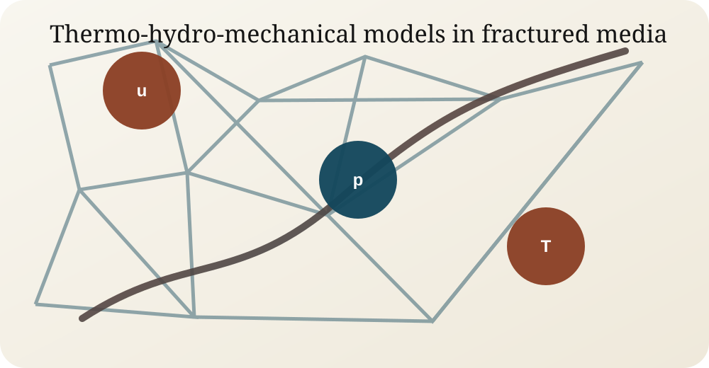

Energy-preserving discretizations
Design and analysis of schemes that preserve the thermodynamic structure of coupled models, with a focus on energy estimates and stability for mechanics-flow-heat transfer systems.
My research develops robust numerical schemes for coupled thermo-hydro-mechanical processes in complex fractured geometries, with applications ranging from subsurface mechanics to nuclear safety.

Fractures are represented as lower-dimensional interfaces embedded in the rock matrix, which requires carefully designed coupling conditions for displacement, pressure, aperture, heat, and contact variables.
Design and analysis of schemes that preserve the thermodynamic structure of coupled models, with a focus on energy estimates and stability for mechanics-flow-heat transfer systems.
Numerical treatment of fracture aperture, pressure exchange, temperature effects, and poromechanical feedbacks in mixed-dimensional domains.
Geological meshes are often non-matching, polyhedral, and cut by fracture networks. VEM and weak contact formulations provide flexibility while retaining analyzable discrete operators.
First-order VEM discretizations for elasticity and poromechanics on general polyhedral meshes, including reconstruction and stabilization operators.
Nitsche formulations for fracture contact constraints, including frictionless and frictional contact mechanics with convergence analysis.
Mixed formulations with multipliers and bubble degrees of freedom for robust treatment of Coulomb friction and stick-slip behavior.
At CEA IRESNE, my postdoctoral work connects multiphase thermal-hydraulics and thermomechanics to support severe-accident simulations involving corium-concrete interaction.
Simulation of concrete ablation, geometry evolution, degassing, heat fluxes, and induced thermomechanical effects during severe nuclear accident scenarios.
Implementation of numerical exchanges between CIMAC and CAST3M for coupled multiphysics simulations within the ANR IMMOC project.